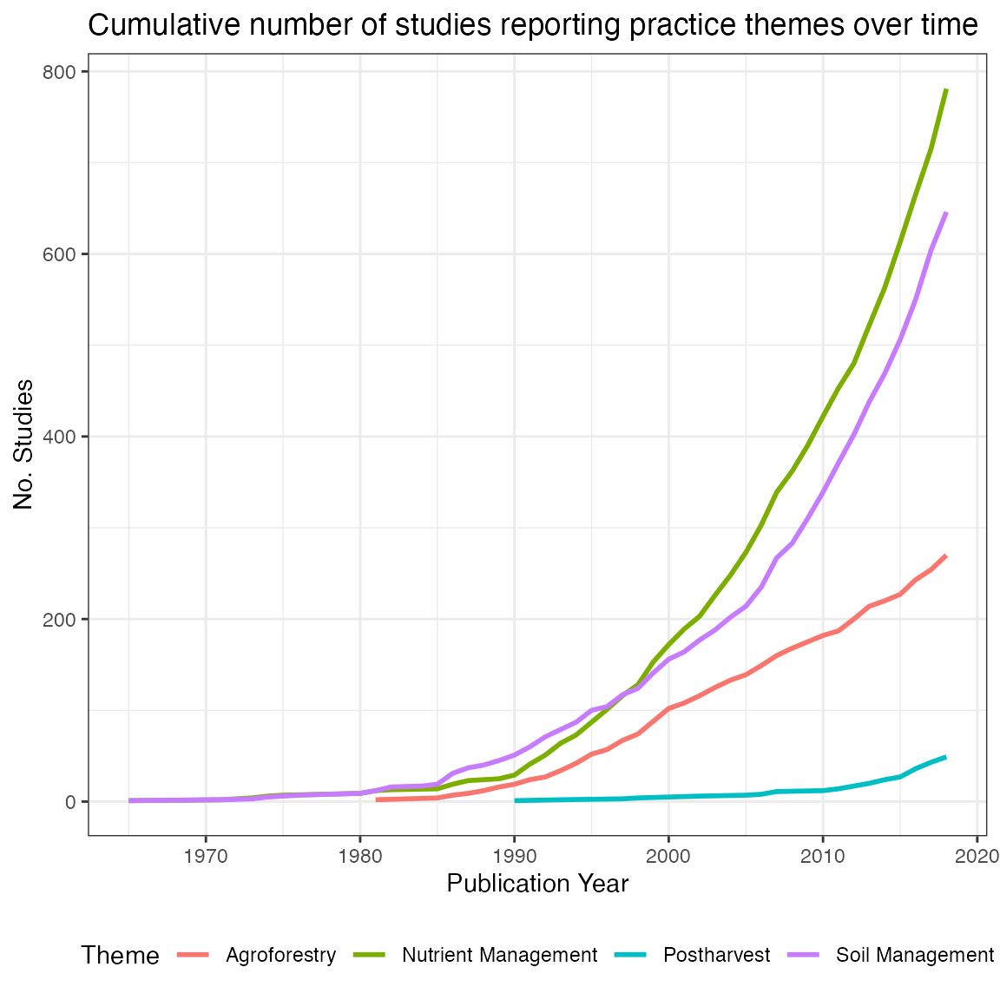
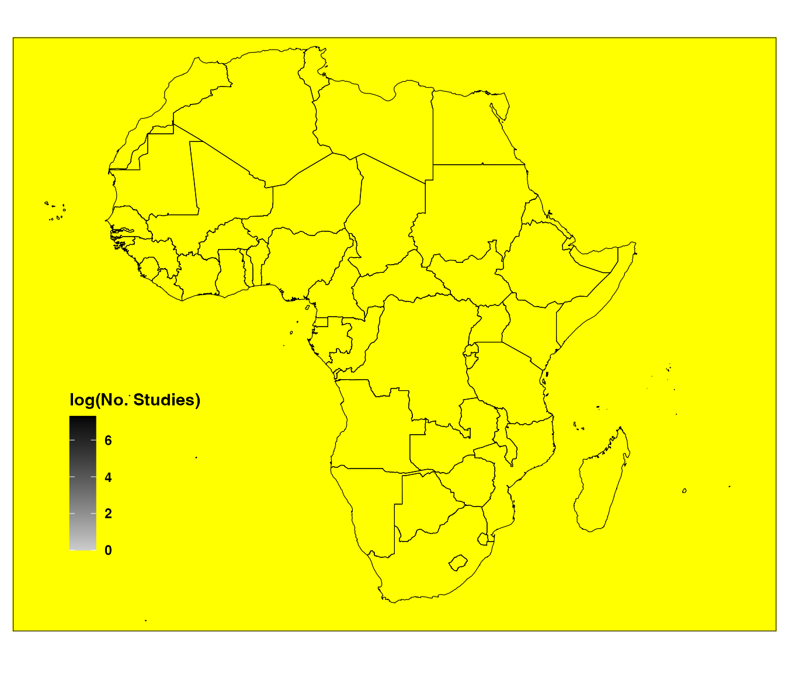
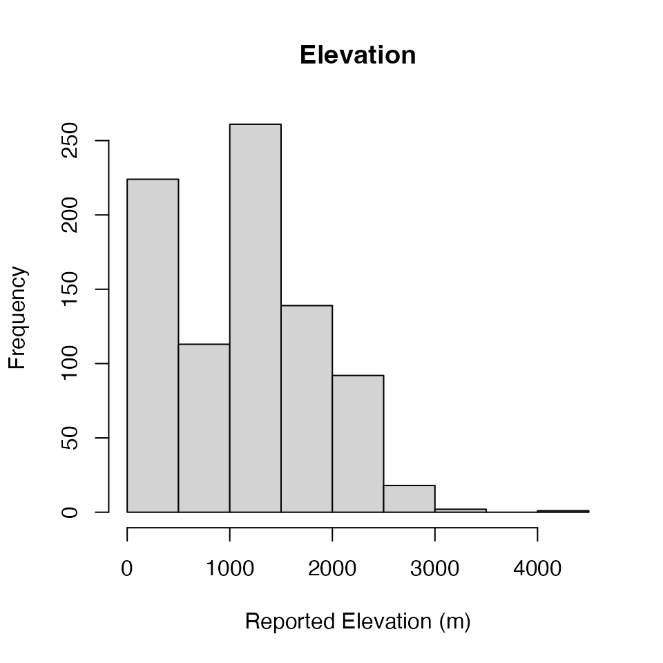
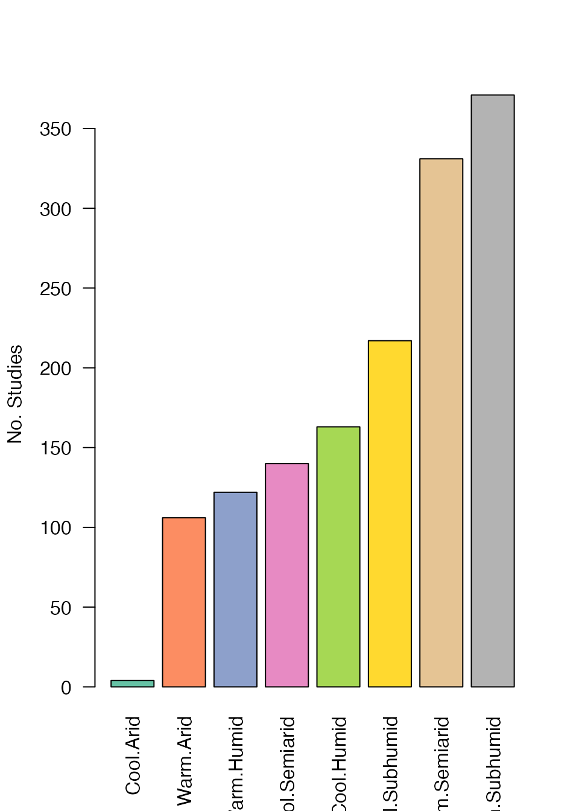

ERA-Introduction
Peter Steward & Todd Rosenstock
2025-04-02
ERA-Introduction.RmdIn this vignette, we will explore key components of the ERA dataset
and some derived products to which it can be linked (also provided in
the ERAg package). This is not intended to be a complete
explanation of everything ERA. Instead its purpose is to highlight a few
features to kick-start use and analysis. Please send feedback on the
explanations or on discoveries that should be included in the next
version to Pete Steward (p.steward@cgiar.org). Please post any questions to the
ERA-Data-Sprint Slack Workspace.
Accessing ERA
The ERA dataset is included with the ERAg package as a
data.table object
ERA.Compiled.
knitr::kable(head(ERAg::ERA.Compiled[,1:8], 5))| Index | Code | Author | Date | Journal | DOI | Elevation | Country |
|---|---|---|---|---|---|---|---|
| 1 | NN0001 | Bationo A | 1997 | NUTR CYCL AGROECOSYS | 10.1023/a:;1009784812549 | NA | Mali |
| 5 | NN0001 | Bationo A | 1997 | NUTR CYCL AGROECOSYS | 10.1023/a:;1009784812549 | NA | Mali |
| 9 | NN0001 | Bationo A | 1997 | NUTR CYCL AGROECOSYS | 10.1023/a:;1009784812549 | NA | Mali |
| 13 | NN0001 | Bationo A | 1997 | NUTR CYCL AGROECOSYS | 10.1023/a:;1009784812549 | NA | Mali |
| 17 | NN0001 | Bationo A | 1997 | NUTR CYCL AGROECOSYS | 10.1023/a:;1009784812549 | NA | Mali |
ERA’s structure
Each row of the dataset forms one
observation. An observation encodes a
unique article, site, treatment comparison, outcome measure, and time
period combination. Each observation includes the article’s
bibliographic information, spatial variables, environmental context,
experimental design, treatment comparisons, and outcome indicator
effects. Each observation has a unique identifier in the
Index column. The Code is
each study’s unique identifier. The most complete description of ERA
fields can be found in either ERA.Compiled, the
ERACompiledFields object from within R, or ‘Online-only
Table 2’ in the Data Descriptor manuscript.
| Field.Name | Description |
|---|---|
| Index | A unique number identifiying an single observation (i.e. row) in ERA. |
| Elevation | The elevation in meters (m). Provide the mid-point if a range is given. |
| Site.Type | One of the following: Farm, Station, Greenhouse, Survey, or Lab. |
Farm research is conducted in a farmer’s field and can be managed by the farmer or researcher. Station research is conducted in a controlled setting of research station, university or school. Survey research is conducted via interviews that yields quantitative data based on testimonial. Greenhouse is conducted in a greenhouse and is only relevant for studies of greenhouse gas emissions data. Lab studies can include fisheries feeding trials conducted at a small scale in university research labs. | |Soil.Texture |List the soil texture provided in the text or in tables in lowercase letters. If no texture is named, but % of sand, silt and clay are given, use the soil texture triangle to estimate soil texture (https://www.nrcs.usda.gov/wps/portal/nrcs/detail/soils/survey/?cid=nrcs142p2_054167). | |Units |Free text description of the units of the data being reported without special characters or formatting. |
Bibliographic Variables
Even bibliographic data can provide insights in to agricultural
research. The Author,
,Date, DOI
and Journal fields provide bibliographic
information for the publication that has contributed the row of data.
DataLoc field describes where data were
extracted from in the publication (e.g. a table or figure). Here, a
simple plot shows how the number of publications reporting different ERA
practice themes changes over time:
knitr::kable(head(unique(ERAg::ERA.Compiled[,list(Code,Author,Date,Journal,DOI,DataLoc)]), 5))| Code | Author | Date | Journal | DOI | DataLoc |
|---|---|---|---|---|---|
| NN0001 | Bationo A | 1997 | NUTR CYCL AGROECOSYS | 10.1023/a:;1009784812549 | Tab 3 |
| NN0002 | Gigou J | 2009 | EXP AGR | 10.1017/s0014479709990421 | Tab 5 |
| NN0002 | Gigou J | 2009 | EXP AGR | 10.1017/s0014479709990421 | Fig 3a.3b.3c |
| NN0002 | Gigou J | 2009 | EXP AGR | 10.1017/s0014479709990421 | Tab 4 |
| NN0003 | Shahandeh H | 2004 | BIOL FERT SOILS | 10.1007/s00374-003-0718-y | Fig 2a.Fig 2b.Fig 2c.Fig 2d.Fig 2e |
# Plot no. studies x theme x year
# Subset data
PrxThxYe<-ERA.Compiled[!is.na(Date),list(Theme,Code,Date)]
# Split Theme on "-" delim (multiple themes can be present in an experimental treatment)
ThemeSplit<-strsplit(PrxThxYe[,Theme],"-")
# Count no. themes per observation & replicate each row by N
N<-rep(1:nrow(PrxThxYe),lapply(ThemeSplit,length))
# Do replication and add split theme back
PrxThxYe<-PrxThxYe[N][,Theme:=unlist(ThemeSplit)]
# Calculate no. studies per theme per year
PrxThxYe<-PrxThxYe[,list(N.Studies=length(unique(Code))),by=list(Theme,Date)]
# Subset to fewer themes to simplify plot
PrxThxYe<-PrxThxYe[Theme %in% c("Nutrient Management","Agroforestry","Postharvest","Soil Management")]
# Order on publication year
PrxThxYe<-PrxThxYe[, Date:=as.numeric(Date)][order(Date)]
# Get cumulative sum by theme by year
PrxThxYe[,Cum.Sum := cumsum(N.Studies), by=list(Theme)]
# Plot
ggplot(PrxThxYe,aes(x=Date,y=Cum.Sum,col=Theme))+
geom_line(alpha=1,size=1)+
theme_bw()+
theme(legend.position = "bottom")+
labs(title="Cumulative number of studies reporting practice themes over time",
x= "Publication Year",
y = "No. Studies")
Spatial Variables
ERA’s power, in part, comes from the ability to link it to other
datasets such as soils, historical climate, distance to markets among
many others. Unfortunately, geographic coordinates have not always been
commonly reported. Even today coordinates are often reported with low
degrees of precision or are simply incorrect. During data extraction,
significant effort was made to identify the most likely coordinates for
where a study occurred and to provide some estimate of uncertainty for
those coordinates. These data can be found in the
Country,
Site.ID,
,Latitude,
Longitude and
Buffer fields. These fields give the
spatial location of the site in decimal degrees and a radius of
uncertainty in meters. There is also the Site.Key field
which is a concatenation of the Latitude,
Longitude and
Buffer fields, this can be used to
identify unique locations independent of what the site is called in a
publication (i.e. the Site.ID field). We
standardized location names so the experiments that occurred at the same
locations have the same corresponding names.
knitr::kable(head(unique(ERAg::ERA.Compiled[,list(Country,Site.ID,Latitude,Longitude,Buffer)]), 5))| Country | Site.ID | Latitude | Longitude | Buffer |
|---|---|---|---|---|
| Mali | Sougoumba | 12.1700 | -5.1000 | 550 |
| Mali | Tafla | 13.2000 | -4.8800 | 550 |
| Mali | Tinfounga | 11.1200 | -8.4400 | 550 |
| Guinea | Bareng ARS | 11.1555 | -12.5285 | 400 |
| Mali | Cinzana ARS | 13.2790 | -5.9340 | 600 |
The Pbuffer function creates a
SpatialPolygons object of all the study sites in ERA.
SiteBuffers<-ERAg::Pbuffer(Data=ERAg::ERA.Compiled, ID = NA, Projected = F)
#> Warning: PROJ: merc: Invalid latitude (GDAL error 1)
#> Warning: Invalid coordinate (GDAL error 1)
#> Warning: PROJ: merc: Invalid latitude (GDAL error 1)
#> Warning: Invalid coordinate (GDAL error 1)
#> Warning: PROJ: merc: Invalid latitude (GDAL error 1)
#> Warning: Invalid coordinate (GDAL error 1)
#> Warning: PROJ: merc: Invalid latitude (GDAL error 1)
#> Warning: Invalid coordinate (GDAL error 1)
#> Warning: PROJ: merc: Invalid latitude (GDAL error 1)
#> Warning: Invalid coordinate (GDAL error 1)
#> Warning: PROJ: merc: Invalid latitude (GDAL error 1)
#> Warning: Invalid coordinate (GDAL error 1)
#> Warning: PROJ: merc: Invalid latitude (GDAL error 1)
#> Warning: Invalid coordinate (GDAL error 1)
#> Warning: PROJ: merc: Invalid latitude (GDAL error 1)
#> Warning: Invalid coordinate (GDAL error 1)
#> Warning: PROJ: merc: Invalid latitude (GDAL error 1)
#> Warning: Invalid coordinate (GDAL error 1)
#> Warning: PROJ: merc: Invalid latitude (GDAL error 1)
#> Warning: Invalid coordinate (GDAL error 1)
#> Warning: PROJ: merc: Invalid latitude (GDAL error 1)
#> Warning: Invalid coordinate (GDAL error 1)
#> Warning: PROJ: merc: Invalid latitude (GDAL error 1)
#> Warning: Invalid coordinate (GDAL error 1)
#> Warning: PROJ: merc: Invalid latitude (GDAL error 1)
#> Warning: Invalid coordinate (GDAL error 1)
#> Warning: PROJ: merc: Invalid latitude (GDAL error 1)
#> Warning: Invalid coordinate (GDAL error 1)
#> Warning: PROJ: merc: Invalid latitude (GDAL error 1)
#> Warning: Invalid coordinate (GDAL error 1)
#> Warning: PROJ: merc: Invalid latitude (GDAL error 1)
#> Warning: Invalid coordinate (GDAL error 1)
#> Warning: PROJ: merc: Invalid latitude (GDAL error 1)
#> Warning: Invalid coordinate (GDAL error 1)
#> Warning: PROJ: merc: Invalid latitude (GDAL error 1)
#> Warning: Invalid coordinate (GDAL error 1)
#> Warning: PROJ: merc: Invalid latitude (GDAL error 1)
#> Warning: Invalid coordinate (GDAL error 1)
#> Warning: PROJ: merc: Invalid latitude (GDAL error 1)
#> Warning: Reprojection failed, err = 2049, further errors will be suppressed on
#> the transform object. (GDAL error 1)
#> Warning: PROJ: merc: Invalid latitude (GDAL error 1)
#> Warning: PROJ: merc: Invalid latitude (GDAL error 1)
#> Warning: PROJ: merc: Invalid latitude (GDAL error 1)
#> Warning: PROJ: merc: Invalid latitude (GDAL error 1)
#> Warning: PROJ: merc: Invalid latitude (GDAL error 1)
#> Warning: PROJ: merc: Invalid latitude (GDAL error 1)
#> Warning: PROJ: merc: Invalid latitude (GDAL error 1)
#> Warning: PROJ: merc: Invalid latitude (GDAL error 1)
#> Warning: PROJ: merc: Invalid latitude (GDAL error 1)
#> Warning: PROJ: merc: Invalid latitude (GDAL error 1)
#> Warning: PROJ: merc: Invalid latitude (GDAL error 1)
#> Warning: PROJ: merc: Invalid latitude (GDAL error 1)
#> Warning: PROJ: merc: Invalid latitude (GDAL error 1)
#> Warning: PROJ: merc: Invalid latitude (GDAL error 1)
#> Warning: PROJ: merc: Invalid latitude (GDAL error 1)
#> Warning: PROJ: merc: Invalid latitude (GDAL error 1)
#> Warning: PROJ: merc: Invalid latitude (GDAL error 1)
#> Warning: PROJ: merc: Invalid latitude (GDAL error 1)
#> Warning: PROJ: merc: Invalid latitude (GDAL error 1)
#> Warning: PROJ: merc: Invalid latitude (GDAL error 1)
#> Warning: PROJ: merc: Invalid latitude (GDAL error 1)
#> Warning: PROJ: merc: Invalid latitude (GDAL error 1)
#> Warning: PROJ: merc: Invalid latitude (GDAL error 1)
#> Warning: PROJ: merc: Invalid latitude (GDAL error 1)
#> Warning: PROJ: merc: Invalid latitude (GDAL error 1)
#> Warning: PROJ: merc: Invalid latitude (GDAL error 1)
#> Warning: PROJ: merc: Invalid latitude (GDAL error 1)
#> Warning: PROJ: merc: Invalid latitude (GDAL error 1)
#> Warning: PROJ: merc: Invalid latitude (GDAL error 1)
#> Warning: PROJ: merc: Invalid latitude (GDAL error 1)
#> Warning: PROJ: merc: Invalid latitude (GDAL error 1)
#> Warning: PROJ: merc: Invalid latitude (GDAL error 1)
#> Warning: PROJ: merc: Invalid latitude (GDAL error 1)
#> Warning: PROJ: merc: Invalid latitude (GDAL error 1)
#> Warning: PROJ: merc: Invalid latitude (GDAL error 1)
#> Warning: PROJ: merc: Invalid latitude (GDAL error 1)
#> Warning: PROJ: merc: Invalid latitude (GDAL error 1)
#> Warning: PROJ: merc: Invalid latitude (GDAL error 1)
#> Warning: PROJ: merc: Invalid latitude (GDAL error 1)
#> Warning: PROJ: merc: Invalid latitude (GDAL error 1)
#> Warning: PROJ: merc: Invalid latitude (GDAL error 1)
#> Warning: PROJ: merc: Invalid latitude (GDAL error 1)
#> Warning: PROJ: merc: Invalid latitude (GDAL error 1)
#> Warning: PROJ: merc: Invalid latitude (GDAL error 1)
#> Warning: PROJ: merc: Invalid latitude (GDAL error 1)
#> Warning: PROJ: merc: Invalid latitude (GDAL error 1)
#> Warning: PROJ: merc: Invalid latitude (GDAL error 1)
#> Warning: PROJ: merc: Invalid latitude (GDAL error 1)
#> Warning: PROJ: merc: Invalid latitude (GDAL error 1)
#> Warning: PROJ: merc: Invalid latitude (GDAL error 1)
#> Warning: PROJ: merc: Invalid latitude (GDAL error 1)
#> Warning: PROJ: merc: Invalid latitude (GDAL error 1)
#> Warning: PROJ: merc: Invalid latitude (GDAL error 1)
#> Warning: PROJ: merc: Invalid latitude (GDAL error 1)
#> Warning: PROJ: merc: Invalid latitude (GDAL error 1)
#> Warning: PROJ: merc: Invalid latitude (GDAL error 1)
#> Warning: PROJ: merc: Invalid latitude (GDAL error 1)
#> Warning: PROJ: merc: Invalid latitude (GDAL error 1)
#> Warning: PROJ: merc: Invalid latitude (GDAL error 1)
#> Warning: PROJ: merc: Invalid latitude (GDAL error 1)
#> Warning: PROJ: merc: Invalid latitude (GDAL error 1)
#> Warning: PROJ: merc: Invalid latitude (GDAL error 1)
#> Warning: PROJ: merc: Invalid latitude (GDAL error 1)
#> Warning: PROJ: merc: Invalid latitude (GDAL error 1)
#> Warning: PROJ: merc: Invalid latitude (GDAL error 1)
#> Warning: PROJ: merc: Invalid latitude (GDAL error 1)
#> Warning: PROJ: merc: Invalid latitude (GDAL error 1)
#> Warning: PROJ: merc: Invalid latitude (GDAL error 1)
#> Warning: PROJ: merc: Invalid latitude (GDAL error 1)
#> Warning: PROJ: merc: Invalid latitude (GDAL error 1)
#> Warning: PROJ: merc: Invalid latitude (GDAL error 1)
#> Warning: PROJ: merc: Invalid latitude (GDAL error 1)
#> Warning: PROJ: merc: Invalid latitude (GDAL error 1)
#> Warning: PROJ: merc: Invalid latitude (GDAL error 1)
#> Warning: PROJ: merc: Invalid latitude (GDAL error 1)
#> Warning: PROJ: merc: Invalid latitude (GDAL error 1)
#> Warning: PROJ: merc: Invalid latitude (GDAL error 1)
#> Warning: PROJ: merc: Invalid latitude (GDAL error 1)
#> Warning: PROJ: merc: Invalid latitude (GDAL error 1)
plot(SiteBuffers)You will immediately notice that some locations have very high
spatial uncertainty, which can derive from the aggregation of sites in
reporting. Depending on the use, it may be worth considering filtering
these from the dataset using the Buffer field.
# Filter dataset to sites with spatial uncertainty radius of less than 5km
ERA.Compiled<-ERAg::ERA.Compiled[Buffer<5000]The spatial distribution of ERA data can be visualized with the
ERAHexPlot functions:
ERAgON::ERAHexPlot(Data=ERA.Compiled,Low = "grey10",Mid = "grey80",High = "black",Point.Col = "yellow",Do.Log="Yes",Showpoints="Yes",ALevel=NA)
We can also use the ERAAlphaPlot function from the
helper functions supplied in the ERAgON package. A
background map can be added to the plot using the Background parameters,
in this case we add a farming system map supplied from the CELL5M dataset.
ERAgON::ERAAlphaPlot(Data = ERA.Compiled,
Background = NA,
Background.Labs = NA,
Background.Cols = NA,
Background.Title = NA,
alpha.bandwidth = 4,
Showpoints = T,
Low = "black",
Mid = "grey30",
High = "white",
Point.Col = "Black",
ALevel = NA)Aggregated Sites
Where experiments have been conducted across multiple sites it is not
unusual for results to be reported averaged across more than one site.
In ERA, combined sites are indicated by the concatenation of names in
the Site.ID field using a
.. delimiter. Note that aggregation of
sites can lead to very large buffer distances.
Agg.Sites<-unique(ERA.Compiled[grep("[.][.]",Site.ID),
list(Site.ID,Latitude,Longitude,Buffer,Version)])
knitr::kable(head(Agg.Sites,5))| Site.ID | Latitude | Longitude | Buffer | Version |
|---|---|---|---|---|
| Mango..Koukombo | 10.31667 | 0.41667 | 31 | 2018 |
| Beja..Siliana | 36.41000 | 9.27000 | 176 | 2018 |
| Kakamega..Vihiga | 0.18000 | 34.37000 | 202 | 2018 |
| Kapolin..Opwetta..Kadesok | 1.39000 | 34.03000 | 438 | 2018 |
| Kisiro..Minani..NaCRRI | 0.66000 | 33.33000 | 538 | 2018 |
Temporal Variables
Understanding when an experiment took place is equally important to its spatial location for linking ERA to many other data. Temporal variables describe when an observation was measured in terms of year and growing season, with year defined by the observation measurement date. They also include any reported planting and harvest dates. The following describe the field and format of temporal variables.
-
M.Year= data entry code for season of observation (we recommend you use the fields below where this is split into component parts) -
M.Year.Start= start year of observation period -
M.Year.End= end year of observation period -
M.Season.Start= start season of observation period -
M.Season.End= end season of observation period -
Plant.Start= start date of planting period/uncertainty (dd.mm.yyyy) -
Plant.End= end date of planting period/uncertainty (dd.mm.yyyy) -
Harvest.Start= start date of harvest period/uncertainty (dd.mm.yyyy) -
Harvest.End= end date of harvest period/uncertainty (dd.mm.yyyy) -
Duration= duration of the experiment for the season of observation (season 1 = 0.5)
Experimental outcomes can be reported averaged over time. When this
is the case, M.Year.Start and M.Season.Start
indicate the starting season and M.Year.End and
M.Season.End the ending season, respectively for the
temporal reporting period. Season is typically used to indicate the
growing season in a bimodal rainfall area. However, it also used to
indicate non-seasonal experimental periods within a year, for example
multiple irrigated growing seasons.
Planting & harvest start and end dates typically indicate
uncertainty as to when planting or harvesting occurred. For example,
when a publication reports crop were planted in May 2012
then Plant.Start would be 01.05.2012 and
Plant.End would be 31.05.2012.
Values of 9999 in M.Year
fields indicate the year an experimental outcome was not reported. This
situation is more common in postharvest or livestock diet experiments,
than agronomic experiments.
Experimental Design
The number of experimental replications,
Rep, is used as a proxy for experimental
precision and used when calculating observation weights and calculating
effects sizes in ERA. Replications are used, instead of other measures
of variation, because standard deviations and standard errors are not
reported consistently. Given ERA’s scope (1,000s of papers), it was not
logistically possible to reach out to every author.
Plot.Size is the physical area per
replication. It can be another proxy for experimental precision and
could be used to weight observations. Last, ERA records whether the
experiment occurred on a research station or in a farmer’s field.
Higher Level Concepts: Practices, Outcomes, and Products (EUs)
In addition to spatial and temporal variables, there are three high level concepts that are the foundation of ERA’s experiment classification system. These are practices, outcomes and products (or experimental units). Practices here is shorthand for Management practices and technologies which describe agronomic, agroforestry, and livestock interventions, for example, crop rotations, livestock dietary supplements or the like. Outcomes, as they sound, relate to the dependent variables in experiments (e.g., yield, benefit-cost ratios, soil carbon). Products refers to the the species or commodity that the outcome is measured on, for example maize, milk, or meat.
Each is organized hierarchically, where concepts are nested below and above related concepts. This organization allows the user to aggregate or disaggregate data using these fields to explore different questions, from narrow (e.g., how does a Gliricidia-based alley cropping change maize crop yields?) to broad (e.g., considering all products which practices, on average, improve productivity, resilience and mitigation outcomes?). It also facilitates the user to deliver information at the level for the specific users. For example, policy makers refer to agroforestry broadly while farmers are typically more interested in nuanced (disaggregated) results for species and practices. ERA’s practices, outcomes, and products hierarchies are unique but recently has been mapped to other ontologies including AGROVOC and AgrO to increase future interoperability. These mappings will be available in future releases.
We can view the subordinates of these high level concepts by
accessing the datasets PracticeCodes,
OutcomesCodes and EUCodes included with the
ERAg package. Alternatively the organization of higher
level concepts can also be viewed in the ERAConcepts list
or in somewhat less detail in the manuscript describing the data.
ERAg::ERAConcepts
#> $Prac.Levels
#> Choice Choice.Code Prac Base
#> <char> <char> <char> <char>
#> 1: Subpractice S SubPrName SubPrName.Base
#> 2: Practice P PrName PrName.Base
#>
#> $Out.Levels
#> Choice Choice.Code Out
#> <char> <char> <char>
#> 1: Subindicator SI Out.SubInd
#> 2: Indicator I Out.Ind
#> 3: Subpillar SP Out.SubPillar
#> 4: Pillar P Out.Pillar
#>
#> $Prod.Levels
#> Choice Choice.Code Prod
#> <char> <char> <char>
#> 1: Product P Product.Simple
#> 2: Subtype S Product.Subtype
#> 3: Type T Product.Type
#>
#> $Agg.Levels
#> Choice Choice.Code Agg Label
#> <char> <char> <char> <char>
#> 1: Observation O Index No. Locations
#> 2: Study S Code No. Studies
#> 3: Location L Site.Key No. ObservationsManagement practices and technologies
We selected a set of management practices and technologies (‘practices’ hereafter) based on existing literature and feedback from development partners. This list includes a broad range of interventions but clearly not all. Therefore, it is important to familiarize yourself with what is included with ERA. Practice coding is highly disaggregated with a single treatment receiving up to 13 individual codes. Codes for every practice in that treatment are included such as seed, tillage, fertilizer use, weeding, etc.
Each observation (row in the dataset) is set up to compare two treatments. A treatment in an experiment may be compared to more than one other treatment. What constitutes valid comparisons can be found in the manuscript describing the dataset. But it is important to know that a treatment from a single study may be presented in multiple observations (rows) for those interested to not work on the comparisons themselves.
Management practices and technologies: Code Sheet
We can find practice codes, their names and definitions in the
PracticeCodes object:
knitr::kable(head(ERAg::PracticeCodes[,1:6], 5))| Code | Theme | Theme.Code | Practice | Practice.Code | Subpractice |
|---|---|---|---|---|---|
| a1 | Agroforestry | Agroforestry | FMNR | FMNR | Farmer Managed Natural Regeneration |
| a3 | Agroforestry | Agroforestry | Alleycropping | Al | Alleycropping (N fixing) |
| a4 | Agroforestry | Agroforestry | Alleycropping | Al | Alleycropping (Non N fixing) |
| a4.1 | Agroforestry | Agroforestry | Alleycropping | Al | Alleycropping (Mixed) |
| a14 | Agroforestry | Agroforestry | Alleycropping | Al | Alleycropping (Unspecified) |
There are two types of practice code h codes and ERA codes (all other code values). h codes are control codes for unimproved or non-focal experimental practices.
Management practices and technologies: Data Extraction Variables
The main columns used to describe practices and treatments
(treatments being a specific combination of experimental or control
practices) in data extraction include:
1) T1:T13 = T columns each
column can contain a single practice code and together they describe the
experimental treatment
2) C1:C13 = C columns each
column can contain a single practice code and together they describe the
control treatment
3) TID = a short code beginning with T
identifying a unique experimental treatment within a study
4) CID = a short code beginning with C
identifying a unique control treatment within a study
5) T.Descrip = a short descriptive of the
experimental treatment (used to aid data entry)
6) C.Descrip = a short descriptive of the
control treatment (used to aid data entry)
There are additional columns that describe aspects of specific
practices:
1) T.NI/C.NI = the amount of inorganic
nitrogen applied in the experimental and control treatments
2) T.NO/C.NO = the amount of organic
nitrogen applied in the experimental and control treatments
3) Variety = the name of the crop or
animal variety,race,breed, etc. for the product (EU) of the
observation
4) Diversity = a description of crop
diversification in time and/or space (i.e. intercropping and/or
rotation). A / indicates different growing seasons a
.. or a - indicates intercropping. We are
working to standardize the delimiters used in this field . Current
differences are between two data entry periods. The 2020 data entry this
field shows the entire temporal sequence for an experiment, for the 2018
data entry the field captures only the repeating unit of a rotation (if
present)
5) Tree = scientific name(s) of trees used
in agroforestry practices
Management practices and technologies: Set Difference Approach
The base ERA analysis applies a set difference approach, where the
T columns are compared to the C columns to
extract: 1) experimental ERA practices (i.e. practices that do not
contain h) that are in the experimental, but not the
control treatment (plist column); and 2)
base practices that are shared between experimental and control
treatments (base.list column).
T.Cols<-paste0("T",1:13)
C.Cols<-paste0("C",1:13)
T.Cols<-unique(unlist(ERA.Compiled[99,..T.Cols]))
C.Cols<-unique(unlist(ERA.Compiled[99,..C.Cols]))
T.Cols
#> [1] "b21" "b23" "h2" "h55" "h6" "h66.2" ""
C.Cols
#> [1] "h66.2" "h6" "h55" "h2" "b21" ""
# Remove blanks and h-codes
T.Cols<-T.Cols[!(T.Cols==""|grepl("h",T.Cols)) ]
C.Cols<-C.Cols[!(C.Cols==""|grepl("h",C.Cols)) ]
T.Cols
#> [1] "b21" "b23"
C.Cols
#> [1] "b21"
# Experimental practices in experimental treatment but not the control treatment (plist column)
T.Cols[!T.Cols %in% C.Cols]
#> [1] "b23"
# Base practices in both experimental and control treatments (base.list column)
T.Cols[T.Cols %in% C.Cols]
#> [1] "b21"Multiple practices in base or experimental columns are sorted then
concatenated using a - delimiter.
For convenience we have translated the codes in the
plist and
base.list columns into their corresponding
names and codes from ERAg::PracticeCodes:
1) PrName = (experimental) practice
name
2) PrName.Base = base practice name
3) SubPrName = (experimental) subpractice
name (note that this corresponds to the Subpractice.S field in the
PracticeCodes) 4) SubPrName.Base =
base practice name (note that this corresponds to the Subpractice.S
field in the PracticeCodes) 5) Theme
= (experimental) practice theme name
6) Theme.Base = base practice theme
name
| plist | base.list | SubPrName | SubPrName.Base |
|---|---|---|---|
| b23 | b21 | Inputs Urea | Inputs P |
Management practices and technologies: Aggregated Treatments
As with sites and reporting seasons, authors sometimes average
outcomes across experimental treatments, for example in a tillage x
fertilizer experiment the results of fertilizer might be reported
averaged to for tillage and vice-versa. In the 2018 dataset
(Version == 2018) aggregated treatments are indicated in
the TID/CID field with a . delim
for example T1.T2.T3 in the 2020 dataset
(Version == 2020) aggregated treatments are indicated in
the T.Descrip/C.Descrip fields with a
.. delim for example
120 T1..120 T2..120T3..120 T4..120 T5.
Aggregated treatments must have identical management for the aggregated practices in both control and treatment, for example if the experimental vs control comparison is tillage vs no-tillage and aggregation is across five levels of inorganic nitrogen application (0N, 20N, 40N, 60N and 100N) both tillage and no-tillage must be averaged across the same five levels of nitrogen application.
In the 2020 data entry a practice is added to control and treatment for when a practice is present in 50% or more of the aggregated treatments.
Data on practices averaged across different rotation or intercropping sequences is not collected.
Outcomes
Outcomes are simpler than practices as each ERA observation can only have a single outcome. Outcomes were selected to capture metrics of productivity, proxies for resilience, and climate change mitigation. The selection process was driven by practicality, how can we ensure a good distributions of metrics across our end goals, what type of information is typically collected, and what type of information are stakeholders requesting. A fuller description of the outcomes and specifically how resilience is considered in the accompanying manuscript draft.
Outcomes: Code Sheet
Outcome codes, their names and definitions can be found in the
OutcomeCodes object:
knitr::kable(head(ERAg::OutcomeCodes[,1:6], 5))| Code | Pillar | Pillar.Code | Subpillar | Subpillar.Code | Indicator |
|---|---|---|---|---|---|
| 101.0 | Productivity | Productivity | Yield | Yi | Product Yield |
| 101.1 | Productivity | Productivity | Yield | Yi | Product Yield |
| 101.2 | Productivity | Productivity | Yield | Yi | Product Yield |
| 103.0 | Productivity | Productivity | Yield | Yi | Product Yield |
| 118.0 | Productivity | Productivity | Yield | Yi | Product Yield |
Outcomes: ERA Columns
-
Outcode= the outcome codeOutcomeCodes$Codefor the observation
-
Units= the unit of outcome reporting
-
Out.SubInd= outcome subindicator name
-
Out.Ind= outcome indicator name
-
Out.SubPillar= outcome subpillar name
-
Out.Pillar= outcome pillar name
knitr::kable(head(unique(ERA.Compiled[!is.na(Units),list(Outcode,Units,Out.SubInd,Out.Ind,Out.Pillar)]),5))| Outcode | Units | Out.SubInd | Out.Ind | Out.Pillar |
|---|---|---|---|---|
| 101 | Mg/ha | Crop Yield | Product Yield | Productivity |
| 102 | Mg/ha | Crop Residue Yield | Non-Product Yield | Productivity |
| 226 | mg/kg | Soil Nitrogen | Soil Quality | Resilience |
| 226 | mg/kg NO3 | Soil Nitrogen | Soil Quality | Resilience |
| 226 | mg/kg NH4 | Soil Nitrogen | Soil Quality | Resilience |
Outcome: Partial Outcomes
The Partial.Outcome.Code and
Partial.Outcome.Name columns related
specifically to economic outcomes and the concept of marginal outcomes,
in particular costs, benefits, and variables derived from these such as
benefit-cost ratio. Values in these fields indicate that the outcome
does not consider the entire treatment, but only the practices indicated
by the codes and names present. For example a partial outcome could be
the marginal cost of using improved seeds.
Outcomes: Currency Outcomes
Where economic outcomes are reported using a currency unit the
USD2010.C and
USD2010.T columns standardize these to a
USD value in 2010 for the control and experimental treatments
respectively.
We use purchasing power parity (PPP),
consumer price index (CPI)
and USD/local currency exchange rates (xrat)
to standardize local currency to USD:
1) USD values are converted back to local currency using
the xrat for the year and country 2) CPI
adjust local currencies to their value in 2010
3) CPI adjusted 2010 values are divided by
PPP
Data are not present for all countries and years, in particular Zimbabwe.
Products
Products are the final high level concept in ERA. Due to legacy of
the data extraction, products are also called experiment units (EUs) in
ERA. Products as mentioned refer to what is being measured. This is
typically a plant species or animal product. Note that parts of the
plant are often differentiated in the outcome code (e.g., 101 for crop
yield and 102 for biomass yield such as maize stover). In most cases,
only 1 product is provided per observation. When more than one product
relates to an observation outcome product codes or names are
concatenated with a - delimiter.
Products: Code Sheet
Products codes, their names and definitions can be found in the
EUCodes object:
| EU | Product.Type | Product.Subtype | Product.Simple | Product.Simple.Code |
|---|---|---|---|---|
| a14 | Animal | Equine | Horse | Hors |
| c8 | Plant | Cereals | Other Millet | OtMi |
| d9 | Plant | Fibre & Wood | Kapok | Kap |
| b3 | Plant | Fruits | Cherry | Cher |
| e19 | Plant | Fruits | Peach & Nectarine | PeNe |
Products: ERA Columns
-
EU=depreciated: the product code for the observation using a . delim for multiple products
-
EUlist= the product codeOutcomeCodes$Codefor the observation using a-delim for multiple products
-
Product= the full name of the product, including aspect of the component such as grain, meat or milk
-
Product.Simple= simplified product name, excluding any aspects of component
-
Product.Subtype= product subtype name
-
Product.Type= product type name
Biophysical Variables
You can find a range of variables to define the context of an ERA
observation and we will be adding more functions to ERAg to
enable you to link spatio-temporal co-ordinates to biophysical
datasets.
An update is pending to complete the biophysical datasets, this should be ready by 07.05.2021
Climate
Climate: Reported
ERA harvests the following long-term average or seasonal climate
variables when reported from published data:
1) MAT = mean annual temperature
(°C)
2) MAP = mean annual precipitation
(mm)
3) MSP means seasonal precipitation (mm;
matched to the growing season of the observation)
4) TAP total annual precipitation (mm;
matched to the year of the observation)
5) TSP total seasonal precipitation (mm;
matched to the growing season of the observation)
These fields are NA where no information was
available.
knitr::kable(head(unique(ERA.Compiled[!(is.na(MAT)|is.na(MAP)|is.na(TSP)),list(Code,Country,Site.Key,MAT,MAP,MSP,TAP,TSP)]), 5))| Code | Country | Site.Key | MAT | MAP | MSP | TAP | TSP |
|---|---|---|---|---|---|---|---|
| NN0100 | Tunisia | 33.4980 10.6390 B400 | 20 | 150 | NA | NA | 140 |
| NN0157 | South Africa | -28.8160 29.3690 B1000 | 13 | 684 | NA | NA | 351 |
| NN0170 | South Africa | -22.9793 30.4380 B300 | 24.5 | 500 | NA | NA | 168.8 |
| NN0346 | Ghana | 06.6800 -1.5600 B1000 | 26.61 | 1375 | NA | NA | 154 |
| NN0346 | Ghana | 06.6800 -1.5600 B1000 | 26.61 | 1375 | NA | NA | 320 |
# Make sure Mean.Annual.Precip variable is numeric
# Average Mean.Annual.Precip for unique spatial locations
# Select Mean.Annual.Precip variable from data.table
MAP<-ERA.Compiled[,MAP:=as.numeric(MAP)
][!is.na(MAP),list(MAP=mean(MAP)),by=Site.Key
][,MAP]
hist(MAP,main="Reported MAP Histogram",xlab="Mean annual precipitation (mm)")
Climate: Derived
In ERA.Compiled we have also added two climate fields
extracted from geo-spatial climate datasets using the buffers created by
the Pbuffer function:
1) Mean.Annual.Temp = mean annual
temperature (C) derived from the NASA POWER dataset API at
0.5° resolution.
2) Mean.Annual.Precip = mean annual
precipitation (mm) derived from the CHIRPS 2.0 dataset API
at 0.05° resolution. Note values less than zero come from a
bug we need to fix, please ignore these.
knitr::kable(head(unique(ERA.Compiled[!(is.na(MAT)|is.na(MAP)),list(Code,Country,Site.Key,MAT,Mean.Annual.Temp,MAP,Mean.Annual.Precip)]), 5))| Code | Country | Site.Key | MAT | Mean.Annual.Temp | MAP | Mean.Annual.Precip |
|---|---|---|---|---|---|---|
| NN0014.1 | Morocco | 32.9540 -7.6260 B1000 | 19.55 | 18.8 | 358.00 | 167.5742 |
| NN0017 | Morocco | 31.6330 -8.2180 B5000 | 17.3 | 19.5 | 250.00 | NA |
| NN0017 | Morocco | 31.6330 -8.2180 B5000 | 17.3 | 19.5 | 237.53 | NA |
| NN0021 | Niger | 13.0000 07.1072 B1500 | 29 | 27.2 | 500.00 | 548.5129 |
| NN0025 | Niger | 13.2343 02.2840 B1100 | 29 | 28.7 | 560.00 | 548.2516 |
Mean.Annual.Precip<-ERA.Compiled[,Mean.Annual.Precip:=as.numeric(Mean.Annual.Precip)
][!is.na(Mean.Annual.Precip),list(Mean.Annual.Precip=mean(Mean.Annual.Precip)),
by=Site.Key
][Mean.Annual.Precip>0,Mean.Annual.Precip]
# In the line above we filter out any negative CHIRPs values (there's a bug we need to fix)
hist(Mean.Annual.Precip,main="CHIRPS 2.0 MAP Histogram",xlab="Mean annual precipitation (mm)")
Soil
Soil: Reported
ERA harvests the following baseline soil variables from published
data:
1) Soil.Type = Depreciated & only
available for 2018 version; soil classification/name as presented by
author
2) Soil.Classification = Depreciated
& only available for 2018 version; taxonomic system used to classify
the soil
3) Soil.Texture = soil texture at
start of experiment as described by author or derived
from reported % sand, silt or clay using the USDA
soil texture triangle
4) SOC = soil organic carbon at
start of experiment
5) SOC.Unit = unit of reporting for
SOC field
6) SOC.Depth = depth of SOC
reporting; min and max depths in cm concatenated with a -,
e.g. 0-30
7) Soil.pH = soil pH at
start of experiment
8) Soil.pH.Method = the method used to
calculate soil pH.
knitr::kable(head(unique(ERA.Compiled[!(is.na(SOC)|is.na(Soil.pH)|is.na(Soil.Texture)),
list(Code,Site.Key,Soil.Texture,SOC,SOC.Unit,SOC.Depth,Soil.pH,Soil.pH.Method)]), 5))| Code | Site.Key | Soil.Texture | SOC | SOC.Unit | SOC.Depth | Soil.pH | Soil.pH.Method |
|---|---|---|---|---|---|---|---|
| NN0002 | 11.1555 -12.5285 B400 | clay | 1.80 | % | NA | 4.5 | H2O |
| NN0002 | 13.2790 -5.9340 B600 | loamy fine sand | 0.50 | % | NA | 5.5 | H2O |
| NN0002 | 10.3671 -9.3355 B500 | sandy loam | 0.50 | % | NA | 5.0 | H2O |
| NN0003 | 13.2790 -5.9340 B600 | loamy sand | 1.84 | g/kg | 10 | 5.6 | H2O |
| NN0003 | 13.2790 -5.9340 B600 | clay | 9.16 | g/kg | 10 | 6.2 | H2O |
Soil: Derived
Soil texture variables for depth 0-30 cm from the SoilGrids 2018
dataset are also added to the ERA.Complied dataset:
1) CLY = weight percentage of clay
particles (<0.0002 mm)
2) SLT = weight percentage of silt
particles (0.0002–0.05 mm)
3) SND = weight percentage of the sand
particles (0.05–2 mm)
These are averaged for each buffered site location with areas of slope
> insert value + unit masked out.
A near complete list of SoilGrids 2018 variables for depths 0-5, 5-15
and 15-30cm can be found in the ERA_SoilGrids18 dataset.
These variables can be matched to ERA observations using the
Site.Key parameter. For a description of fields in this
dataset see the SoilGrids Fields tab here.
# Lets look at Cation Exchange Capacity of soil (variable name = CECSOL) at 5-15cm (sl2)
Cols<-c("Site.Key",grep("CECSOL_M_sl2",colnames(ERA_SoilGrids18),value=T))
knitr::kable(head(ERAgON::ERA_SoilGrids18[,Cols],5))| Site.Key | CECSOL_M_sl2_250m.Mean | CECSOL_M_sl2_250m.SD | CECSOL_M_sl2_250m.Quantiles |
|---|---|---|---|
| 12.1700 -5.1000 B550 | 4.187500 | 0.9651174 | 3|3.75|4|5|6 |
| 13.2000 -4.8800 B550 | 7.920000 | 1.0376255 | 6|7|8|9|10 |
| 11.1200 -8.4400 B550 | 9.620690 | 1.6990290 | 7|8|9|11|13 |
| 11.1555 -12.5285 B400 | 15.500000 | 0.5144958 | 15|15|15.5|16|16 |
| 13.2790 -5.9340 B600 | 7.290323 | 1.5317430 | 4|6.5|7|8|10 |
# There are a lot of SoilGrids variables in this dataset:
length(colnames(ERAgON::ERA_SoilGrids18))
#> [1] 168Elevation
Elevation: Reported
The reported elevation of a location in a publication can be found in
the Elevation field.
Elevation<-ERA.Compiled[,Elevation:=as.numeric(Elevation)
][!is.na(Elevation),list(Elevation=mean(Elevation)),
by=Site.Key][,Elevation]
hist(Elevation,main="Elevation",xlab="Reported Elevation (m)")
# We have checked the site at ~4000m it is a valid observation!Elevation: Derived
Elevation data was derived from the ASTER Global Digital Elevation Model
at 1” resolution averaged for the spatial uncertainty buffer of each
site location. The elevation data were also used to calculate mean slope
and aspect. These variables can be found in the
ERAgON::ERA_Physical dataset and can be matched to ERA
observations using the Site.Key parameter.
knitr::kable(head(ERAgON::ERA_Physical[,4:10],5))| Site.Key | Country | ISO.3166.1.alpha.3 | DEMcells | Altitude.med | Altitude.mean | Altitude.sd |
|---|---|---|---|---|---|---|
| 12.1700 -5.1000 B550 | Mali | MLI | 121 | 422 | 421.71 | 5.28 |
| 13.2000 -4.8800 B550 | Mali | MLI | 121 | 278 | 278.05 | 1.87 |
| 11.1200 -8.4400 B550 | Mali | MLI | 121 | 375 | 374.94 | 5.26 |
| 11.1555 -12.5285 B400 | Guinea | GIN | 72 | 1003 | 1003.34 | 3.12 |
| 13.2790 -5.9340 B600 | Mali | MLI | 169 | 285 | 284.73 | 1.74 |
Agroecological Zone
Agroecological zones (AEZs) are defined for each Site.ID
as the modal value from the buffer of uncertainty:
1) AEZ5 5-class AEZs Africa South of the
Sahara (SSA) based on the methodology developed by FAO and IIASA
2) AEZ16 16-class AEZs for Africa South of
the Sahara (SSA) based on the methodology developed by FAO and
IIASA
3) AEZ16simple a simplified version of
AEZ16 removing the tropic/subtropic classification
We use the IFPRI Agro-Ecological Zones for
Africa South of the Sahara datasets available on the Harvard
Dataverse.
* Note AEZ maps do not cover northern Africa*.
AEZ16Simple<-table(unique(ERA.Compiled[!is.na(AEZ16simple),list(Site.Key,AEZ16simple)])[,AEZ16simple])
barplot(sort(AEZ16Simple), las=2,col = brewer.pal(8, "Set2"),ylab="No. Studies")
Bioclimatic variables
According to the Worldclim 2.1
2020 dataset there are 19 “bioclimatic” variables which are derived
from the monthly temperature and rainfall values in order to generate
biologically meaningful variables. These are often used in species
distribution modeling and related ecological modeling techniques. The
bioclimatic variables represent annual trends (e.g., mean annual
temperature, annual precipitation) seasonality (e.g., annual range in
temperature and precipitation) and extreme or limiting environmental
factors (e.g., temperature of the coldest and warmest month, and
precipitation of the wet and dry quarters). A quarter is a period of
three months (1/4 of the year). Values are extracted for each unique ERA
location plus its buffer of spatial uncertainty.
Bioclimatic data are extracted and summmarized for each unique ERA
location plus its buffer of spatial uncertainty, these data can be found
in the ERAgON::ERA_BioClim object.
knitr::kable(ERAgON::ERA_BioClim[1:5,1:5])| V1 | wc2.1_30s_bio_1.Mean | wc2.1_30s_bio_1.SD | wc2.1_30s_bio_1.Median | wc2.1_30s_bio_1.Mode |
|---|---|---|---|---|
| 12.1700 -5.1000 B550 | 27.14792 | 0.0147305 | 27.14792 | 27.15833 |
| 13.2000 -4.8800 B550 | 27.41250 | 0.0058925 | 27.41250 | 27.40833 |
| 11.1200 -8.4400 B550 | 26.82917 | NA | 26.82917 | 26.82917 |
| 11.1555 -12.5285 B400 | 22.40000 | NA | 22.40000 | 22.40000 |
| 13.2790 -5.9340 B600 | 27.82292 | 0.0088394 | 27.82292 | 27.82917 |
Fields are described in the help for this object:
?ERA_BioClim.
Landuse
The CCI-LC
project delivers a new time series of 24 consistent global LC maps
at 300 m spatial resolution on an annual basis from 1992 to 2015.
The number of raster cells of each landcover class for the year 2015 is
summed for each unique ERA locations buffer of spatial
uncertainty.
Landcover data can be found in the
ERAgON::ERA_CCI_LC_15 object and linked to
the ERA.Complied dataset using the Site.Key
field.
knitr::kable(ERAgON::ERA_CCI_LC_15[1:5,1:15])| Site.Key | 10 | 11 | 12 | 20 | 30 | 40 | 50 | 60 | 61 | 62 | 70 | 80 | 90 | 100 |
|---|---|---|---|---|---|---|---|---|---|---|---|---|---|---|
| 12.1700 -5.1000 B550 | 140 | 6 | 0 | 0 | 12 | 0 | 0 | 0 | 0 | 0 | 0 | 0 | 0 | 0 |
| 13.2000 -4.8800 B550 | 63 | 8 | 0 | 70 | 15 | 0 | 0 | 0 | 0 | 0 | 0 | 0 | 0 | 0 |
| 11.1200 -8.4400 B550 | 0 | 0 | 0 | 0 | 0 | 25 | 0 | 0 | 0 | 90 | 0 | 0 | 0 | 0 |
| 11.1555 -12.5285 B400 | 4 | 0 | 0 | 0 | 65 | 41 | 0 | 10 | 0 | 33 | 0 | 0 | 0 | 0 |
| 13.2790 -5.9340 B600 | 78 | 28 | 0 | 14 | 27 | 2 | 0 | 0 | 0 | 0 | 0 | 0 | 0 | 0 |
A description of the fields in this dataset can be found in the
ERAgON::ERA_CCI_LC_15_Fields object.
knitr::kable(ERAgON::ERA_CCI_LC_15_Fields[1:5,])| Field | Description | Included in | Units |
|---|---|---|---|
| 0 | % cover for No data | NoData | percent |
| 10 | % cover for Cropland, rainfed | Cropland | percent |
| 11 | % cover for Herbaceous cover | Open | percent |
| 12 | % cover for Tree or shrub cover | Woody | percent |
| 20 | % cover for Cropland, irrigated or post-flooding | Cropland | percent |
Other Derived Variables
Like other derived datasets these have been extracted for the spatial
uncertainty buffer for each ERA location and are linked to
ERA/Compiled using the Site.Key field.
A number of datasets including many from the former HarvestChoice
website now found on the Harvard
Dataverse can be found in the
ERAgON::ERA_Other_Linked_Data dataset. You can find details
of these in the ERAgON::ERA_Other_Linked_Data_Fields
object:
Miscellaneous
Version & Analysis Function Feilds
Data entry for ERA was undertaken in two tranches, one in 2018 and
one in 2020. In 2018 valid control vs. treatment comparisons were
decided by the person extracting the data, the amount of data extracted
is as presented in the ERA.Compiled dataset provided in
this package. In 2020 we increased the amount of data captured from a
publication and automated the process of deciding valid comparisons
using logic, data were simplified and reformatted to be compatible and
merged with the 2018 dataset. The Version
field indicates which tranche of data entry an observation comes
from.
There are a number of logical pathways in the 2020 analysis code that
can determine a comparison of control and treatment, the
Analysis.Function field in ERA.Compiled
details which pathway an observation derives from. This is a field
useful for developers.